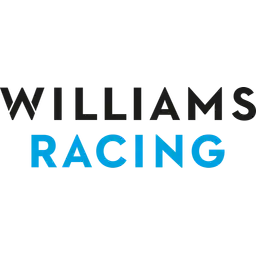

|
La Red Bull Racing è una scuderia austriaca di Formula 1 con sede a Milton Keynes, nel Regno Unito, di proprietá
della societ√† Red Bull (azienda produttrice della omonima bevanda energetica e giá sponsor, in precedenza, di altre
squadre da corsa), dopo che questa ha rilevato il team inglese Jaguar Racing. Dal 2022 viene iscritta al campionato
mondiale di Formula 1 con il nome di Oracle Red Bull Racing, per motivi di sponsorizzazione.
Nella sua storia si è aggiudicata 7 campionati del mondo piloti (2010, 2011, 2012, 2013, 2021, 2022 e 2023) e 6
campionati costruttori (2010, 2011, 2012, 2013, 2022 e 2023).
|

|
La Mercedes AMG F1 è una scuderia tedesca di Formula 1 con sede a Brackley, nel Regno Unito, sezione sportiva della
casa automobilistica Mercedes. Dal 2023 viene iscritta al campionato mondiale di Formula 1 con il nome di Mercedes-AMG
PETRONAS F1 Team, in base all'accordo di sponsorizzazione con l'azienda malese Petronas iniziato nel 2010.
La Mercedes partecipó vittoriosamente al campionato mondiale di Formula 1 nel biennio 1954-1955 ottenendo due titoli
mondiali piloti prima di ritirarsi. È poi ritornata in Formula 1 come fornitore di motori dal 1993.
|

|
La Scuderia Ferrari è una squadra italiana di Formula 1 con sede a Maranello, sezione sportiva della casa
automobilistica Ferrari.
Fondata da Enzo Ferrari nel 1929, nel corso dei decenni si è imposta come una delle squadre piú note e titolate
nell'automobilismo sportivo mondiale.Ha principalmente legato il suo nome al campionato mondiale di Formula 1, in cui è
presente fin dalla sua istituzione e in cui ha conquistato 15 volte il titolo piloti e 16 quello costruttori, record
assoluti in entrambe le categorie.
|

|
La McLaren è una scuderia britannica di Formula 1 con sede a Woking, nel McLaren Technology Centre. Dal
2024 viene iscritta al campionato mondiale di Formula 1 con il nome di McLaren Formula 1 Team. Attualmente possiede anche
una quota di maggioranza della squadra Arrow McLaren SP nella IndyCar Series.
Fondata il 2 settembre 1963 dal pilota neozelandese Bruce McLaren (1937-1970), esordí nel 1966 ed è, insieme
alla Williams, una delle piú prestigiose scuderie britanniche della massima formula ancora in attivitá.
|

|
L'Aston Martin F1 Team, nota dal 2019 al 2020 come Racing Point, è una scuderia britannica di Formula 1 con sede a
Silverstone. Dal 2024 viene iscritta al campionato mondiale di Formula 1 con il nome di Aston Martin Aramco F1 Team, in
base all'accordo di sponsorizzazione con l'azienda saudita Aramco iniziato nel 2022.
Il team è stato fondato da un consorzio guidato dall'investitore canadese Lawrence Stroll, dopo l'acquisto
della scuderia indiana Force India.
|

|
La Racing Bulls F1 Team (abbreviato in RB F1 Team), nota dal 2006 al 2019 come Scuderia Toro Rosso e dal 2020 al 2023
come Scuderia AlphaTauri, è una squadra corse italiana di Formula 1 con sede a Faenza, erede della Minardi dopo
l'acquisto da parte dell'azienda austriaca Red Bull. Dal 2024 viene iscritta al campionato mondiale di Formula 1 con il
nome di Visa Cash App RB F1 Team, in base al cambio di denominazione avvenuto nello stesso anno e per motivi di
sponsorizzazione.
|

|
La Haas F1 Team è una scuderia statunitense di Formula 1 con sede a Banbury, nel Regno Unito, di proprietá
della Haas Automation. Dal 2023 viene iscritta al campionato mondiale di Formula 1 con il nome di MoneyGram Haas F1 Team,
per motivi di sponsorizzazione.
La cittá britannica rappresenta una sede distaccata del team, in precedenza appartenuta alla Marussia, come
appoggio per le gare europee del campionato.
|
|

|
La Williams F1 è una scuderia britannica di Formula 1 con sede a Grove, fondata nel 1977 da Sir Frank Williams e
da Sir Patrick Head. Dal 2020 viene iscritta al campionato mondiale di Formula 1 con il nome di Williams Racing.
Quarta scuderia nella storia per numero di successi, vanta un totale di sedici titoli mondiali, nove costruttori e
sette piloti. Il 21 agosto 2020 viene venduta ufficialmente al fondo di investimento statunitense Dorilton Capital.
|

|
La Renault F1 è una scuderia francese di Formula 1 con sede a Enstone, nel Regno Unito, sezione sportiva della casa
automobilistica Renault. Dal 2022 viene iscritta al campionato mondiale di Formula 1 con il nome di BWT Alpine F1 Team, in
base al cambio di denominazione avvenuto nel 2021 e per motivi di sponsorizzazione.
Ha vinto i suoi primi 15 Gran Premi fra il 1977 e il 1985, ma i titoli mondiali (2 piloti e 2 costruttori) sono
arrivati solo dopo il ritorno in prima persona in Formula 1, nel 2005 e nel 2006 con Fernando Alonso.
|

|
La Sauber F1 Team è una scuderia svizzera di Formula 1 e precedentemente di vetture sport, impegnate tra l'altro
nel campionato del mondo sportprototipi, fondata da Peter Sauber e con sede a Hinwil. Dal 2024 viene iscritta al campionato
mondiale di Formula 1 con il nome di Stake F1 Team Kick Sauber, in base agli accordi di sponsorizzazione con le aziende
australiane Stake e Kick iniziati nel 2023.
Dalla stagione 2006 a quella 2009 la scuderia venne ceduta al costruttore tedesco BMW, che ne fece il suo team ufficiale
pur mantenendo nel nome, BMW Sauber, un riferimento alla squadra originale.
|